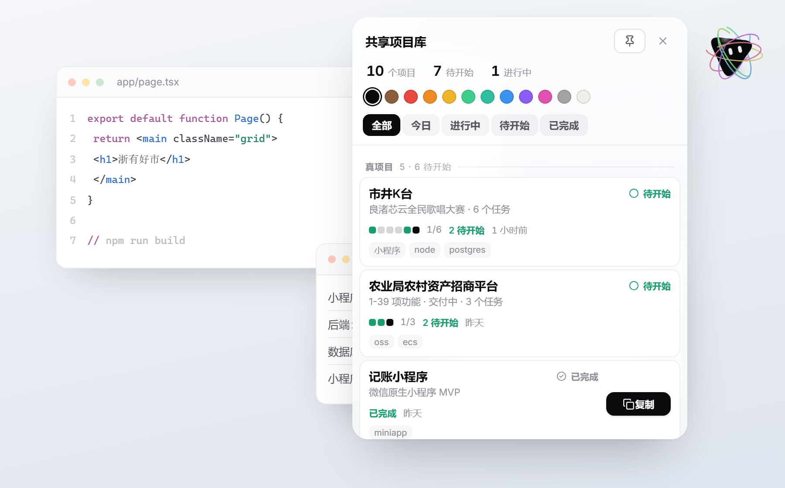
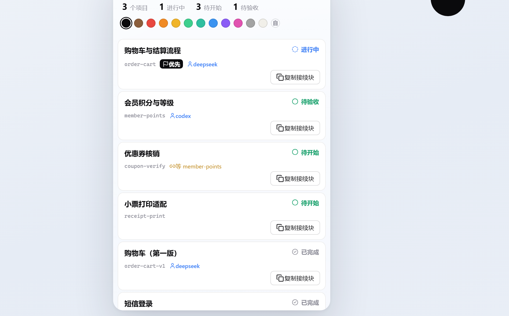

共享项目库
多个 AI 会话共用一个项目状态库，你用一个悬浮球面板看进度。
AI 之间怎么交接、踩过什么坑、下一步干什么 —— 那些由库来说。你只需要看到：这个项目拆成了几个任务、完成了几个。
界面
开机 · 桌面只有一颗球

点开 · 项目名 / 状态 / 完成数

点进 · 每个任务可单独复制
一条路走完
1
规划
对 AI 说"拆成几块放进共享库"，它建项目、拆任务、写验收标准。
AI 干活
2
派活
在面板里点项目 → 点任务 → 复制接续块。那段文本自带指令。
你操作
3
接手
粘进任意会话。AI 读上下文（含别人踩过的坑）后开始干。
AI 干活
4
沉淀
干完自动写库：检查点、产物、任务状态 —— 不用你催。
库记录
5
同步
库一变，面板毫秒级自己更新。待开始 → 进行中 → 已完成。
自动
两部分各干什么
| 共享项目库（后端） | 悬浮球面板（前端） |
|---|
| 给谁看 | AI 之间 | 人 |
| 管什么 | 项目、任务、依赖、租约、合同、检查点、决策、踩过的坑、代码地图、审计事件 | 项目名、状态、完成了几个 / 共几个 |
| 怎么用 | AI 通过 MCP 工具读写 | 点球展开、点任务复制一句指令 |
| 不做什么 | 不存聊天记录、不存私有推理 | 不写库（只读 + 复制文本） |
设计原则
一份事实来源，两个消费者。
所有真实数据都在 PostgreSQL 里，AI 读结构化数据、人看极简进度。面板绝不自己发明状态：所有数字都来自库 ——
改了库，面板就跟着变。人看到的东西和 AI 看到的永远不会打架。
面板只负责两件事：下指令、看结果。
它不写库、不派活、不判断对错。真活由 AI 干、事实由库记 —— 这样每条变更都有出处可查，
也不会出现"人改了 AI 正在做的任务"这种事故。